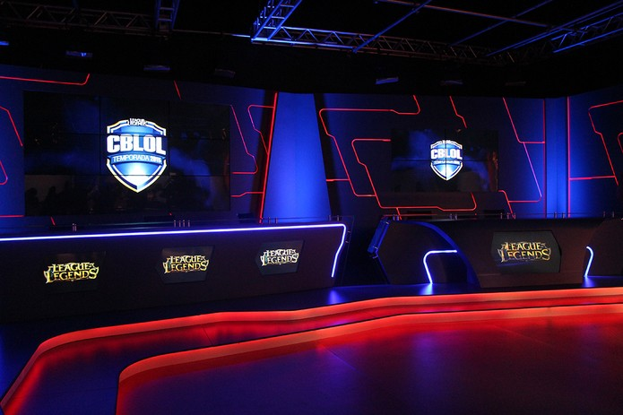
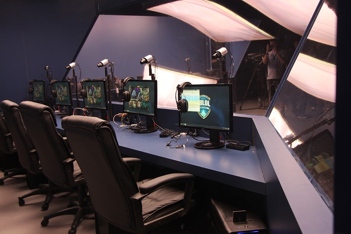

Estúdio de E-sports no Brasil
A Riot Games Brasil anunciou nesta quinta-feira (15), em um evento realizado na sua sede em São Paulo, a inauguração de um estúdio para as transmissões das partidas do Campeonato Brasileiro de League of Legends, o CBLoL. A partir de 2015, todos os campeonatos oficiais serão transmitidos online através do canal oficial da Riot Brasil no Twitch, no Youtube e também pela Azubu TV.
Estúdio será inaugurado para o "Brasileirão 2015" de LoL
(Foto: Taís Carvalho/TechTudo)
Com o objetivo de garantir a melhor experiência para os jogadores e fãs, o estúdio de 350 metros quadrados teve seu conceito inspirado nos padrões de outros estúdios da Riot Games pelo mundo. A estrutura conta com duas cabines equipadas para as equipes, uma área separada para conversas e entrevistas, além de duas mesas para narração e análises das partidas.
A apresentação dos jogos também ficará a cargo de nomes já conhecidos pelos fãs de eSports: Gustavo "loldubr", Diego "Toboco", Tácio "Schaeppi", Gustavo "gstv", Gustavo "Melao13", Guilherme "Tixinha" e Flávio "P3po" serão os 7 apresentadores brasileiros que participarão das transmissões ao vivo no estúdio, comentando, narrando e analisando as partidas.
Transmissão ficará por conta de nomes conhecidos dos esportes eletrônicos
(Foto: Taís Carvalho/TechTudo)
O estúdio será inaugurado com os primeiros jogos do CBLoL 2015, que acontecem neste sábado (17), iniciando a 1° etapa do campeonato. A primeira disputa começará com o clássico paiN Gaming contra a Keyd Stars, às 14h, seguida pela nova equipe da CNB contra a Dexterity, às 16h. Os times disputarão partidas semanais, presencialmente, que serão transmitidas pelo estúdio ao vivo aos sábados e domingos.
O Campeonato Brasileiro de League of Legends terá sua final realizada no Allianz Parque, o estádio do Palmeiras, em São Paulo. Ela acontecerá no dia 1º de agosto e vai reunir os dois melhores times do CBLoL, com uma premiação de 60 mil para o grande campeão.
Autora da Publicação: Tais Carvalho do site (Techtudo)
Autor da Revisão: Mario Souza Leão do site (E-SportsBr)